Nameštanje kičme
Kažem da su svi uzroci bolesti u skeletnom sistemu čoveka. Vraćanjem pršljenova u prirodni položaj otvaramo prostor za nesmetan rad nerava.
ZakažiDečak sa Prokletija, čiji su preci radili nameštanje kičme i zglobova. Ppukovnik, hadži, vitez vidar i instruktor sinapsologije — Radomir Antić.
Zakažite terminOrtoped – kostolomac, vidar, iscelitelj, kiropraktičar, osteopat — ljudi koji nameštaju kosti. U Italiji su mi rekli da sam tvorac Dečanske metode sinapsologije, koju svakodnevno dokazujem u praksi, gde pacijenti kažu da je stvarno prirodna i da je prerasla u novu metodu rehabilitacije.
Znanje predaka
Sinapsologije u porodici
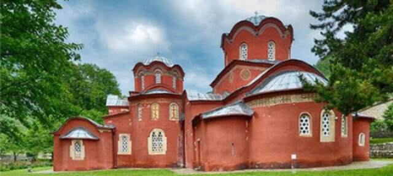
Kažem da su svi uzroci bolesti u skeletnom sistemu čoveka. Vraćanjem pršljenova u prirodni položaj otvaramo prostor za nesmetan rad nerava.
ZakažiLjudska ruka koja vrati zglob u normalno stanje — bez farmacije i komplikovanih uređaja, sa tradicijom i znanjem prenetim vekovima.
ZakažiStvaranje prostora od našeg lekara — mozga (sa 12 kranijalnih nerava) za odvijanje sinapsi do svake ćelije u organizmu.
Saznaj višeOčevi zahvati kostolomca kombinovani sa tretmanima masaže i fizioterapije — više od 18 godina iskustva u porodici.
NasledniciViši sportski fizioterapeuti sa iskustvom veslanja, rukometa i američkog fudbala znaju prednosti i mane obe medicine.
ZakažiOrgani nisu povezani samo krvlju, limfom i nervima, već i energijom koja struji od organa do organa. Tretman vraća harmoniju celom telu.
FilozofijaZakazivanje termina svakog radnog dana od 9 do 20h. Pozovite Radomira, Bojana, Ivanu ili Jelenu — svi nastavljaju porodičnu tradiciju sa velikim uspehom.
Živimo i radimo u Beogradu, na Autokomandi, a periodično i na Zlatiboru. Adresa i mesto gde radimo biće vam poznati prilikom zakazivanja.
Nameštanje kičme i zglobova po Dečanskoj metodi. „Došla sam pomalo skeptična, a otišla pevajući“ — kako je zapisano u knjizi utisaka.
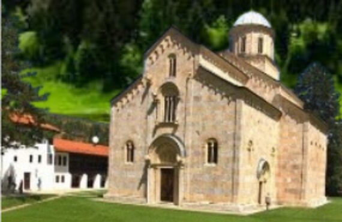
Tesla je inspiracija za moje delo, ali zamisao i ideje su moje od ranog detinstva. Kroz veliki rad, iskustvo i praksu stvorio sam ovo za čovečanstvo i za dobrobit ljudi.
Smatram da smo jedinstvena porodica u Srbiji i šire koja se bavi nameštanjem kičme i zglobova. Svi su instruktori sinapsologije i viši sportski fizioterapeuti.
Ppukovnik, hadži, vitez vidar i instruktor sinapsologije. Tvorac Dečanske metode, autor knjige „Kako je lako isceliti čoveka“.
Viši sportski fizioterapeut, instruktor sinapsologije. Bio je veslač i igrač američkog fudbala. Više od 15 godina radio zajedno sa ocem.
Fizioterapeut, maser, edukator i instruktor sinapsologije. Masažom se bavi više od 18 godina. Prvakinja Srbije u dublskulu.
Sportski fizioterapeut i instruktor sinapsologije. Rukometom se bavila od šeste godine. Usavršila je metodu nameštanja kostiju i kičme.
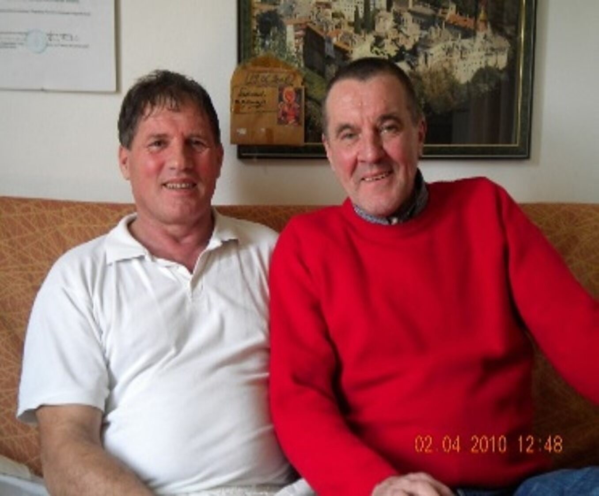
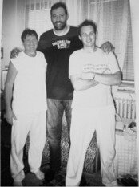
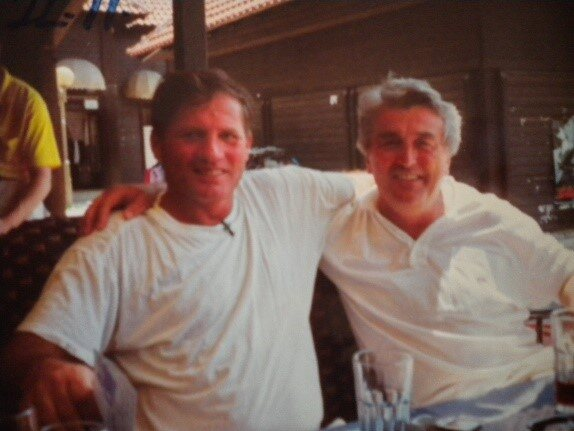
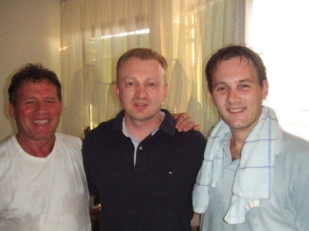
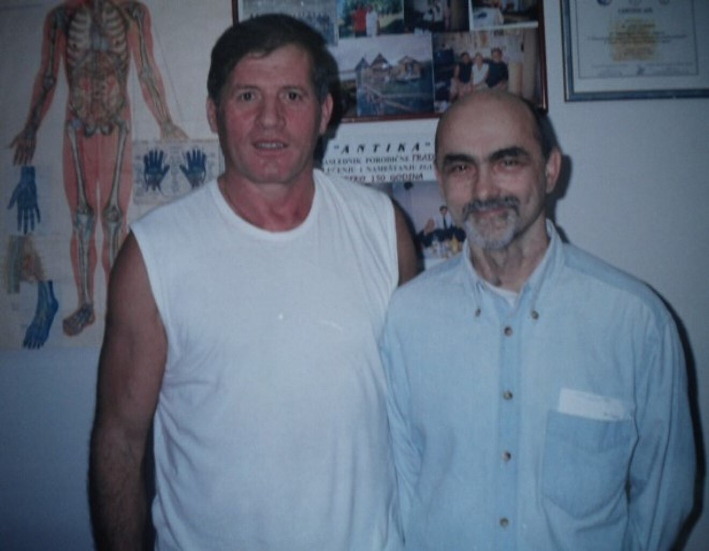
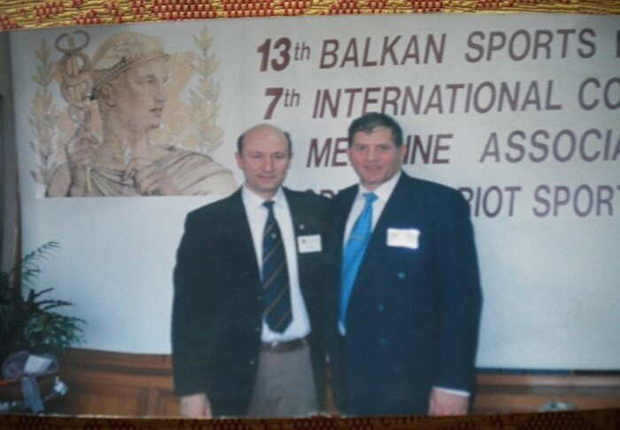
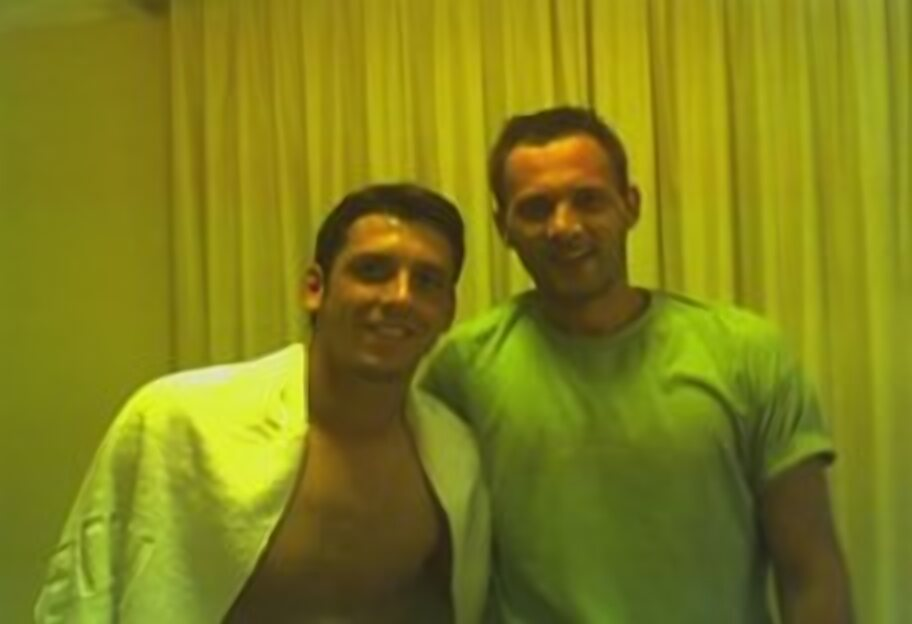
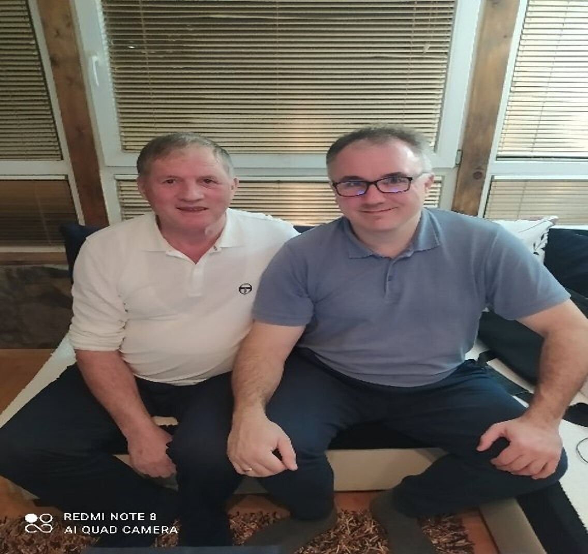
Tu je sve rečeno o meni — shvatićete kako se prirodnim putem, u saradnji sa savremenom medicinom, isceljuje telo.
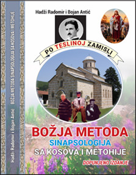
Treće dopunjeno izdanje. Tu je opisana praksa i jedna lepa istinita priča iz mog vremena pre pola veka, kada se znalo samo za ovu vrstu medicine. Jedinstvena knjiga koja na jednostavan način objašnjava Dečansku metodu lečenja narodnih ortopeda — kostolomaca, vidara, iscelitelja.
Odgovorili smo na najčešća pitanja o tretmanima, zakazivanju i Dečanskoj metodi. Za sve ostalo — pozovite nas.
Pozovite nasPrirodna metoda nameštanja kičme i zglobova koja je prerasla u novu metodu rehabilitacije. Naučnici iz Italije rekli su da su kostolomci stvarni kreatori sinapsologije — otvaraju puteve kako bi se sinapse kretale kroz ceo organizam.
Zakazivanje termina je svakog radnog dana od 9 do 20h, telefonom kod Radomira, Bojana, Ivane ili Jelene.
Svi živimo i radimo u Beogradu, na Autokomandi. Periodično radimo i na Zlatiboru. Tačna adresa biće vam poznata prilikom zakazivanja.
Da. Dečanska metoda je zaštićena i prijavljena Autorskoj agenciji Srbije kao autorsko delo, pod brojem k-07/11, dana 28.02.2011. godine.
Pošaljite SMS ili e-mail sa imenom, prezimenom, punom adresom i kontakt telefonom na 064 13 36 483 ili antikakostolomac@gmail.com. Knjigu šaljemo poštom najkasnije 48h od prijema poruke. Cena je 3.000 dinara + poštarina.
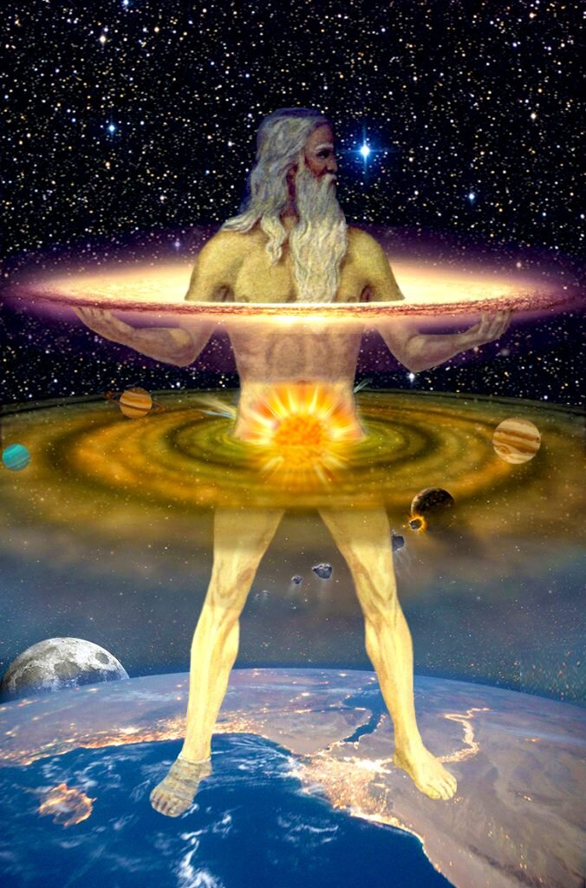
Kao praktičara možete me proveriti za kratko vreme. Pozovite i zakažite tretman nameštanja kičme i zglobova.
Zakaži tretman